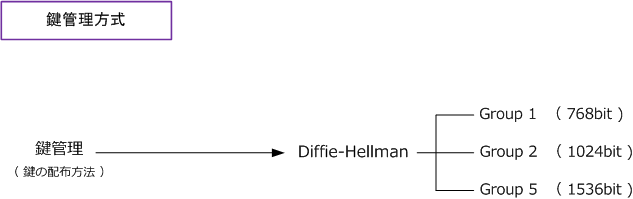
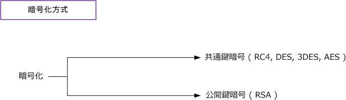
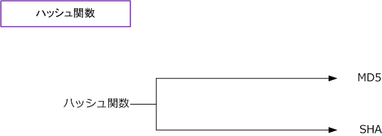
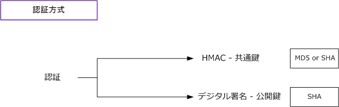

VPN - Encryption System 1
暗号システムの概要
VPNは様々なセキュリティ技術により実現されています。具体的に、鍵管理、暗号化、ハッシュ関数、認証 などがあります。ここでは、これらの概要を説明して、次ページ以降で詳細を説明していきたいと思います。
先ず鍵管理方式。 IPsecでは Diffie-Hellman を採用しています。これは暗号鍵を安全に手渡すために使用。

次に、暗号化方式。 共通鍵暗号と公開鍵暗号の2つがあります。データを暗号化するために使用。

次に、ハッシュ関数。これにはMD5とSHAなどがあります。このハッシュ関数はある与えられたデータから そのデータを代表する固定長の数値を生成する演算手法のこと。これは、改ざん検出などに利用されますが この技術自体がデータの暗号化や認証を行うものではありません。認証技術と併用して使うことができます。

次に、認証方式。これにはHMACとデジタル署名があります。これはデータが改ざんされていないのかを チェックする技術です。共通鍵を使用するのがHMACであり、公開鍵を使用するのがデジタル署名です。 HMACを使用する場合、ハッシュ関数にMD5またはSHAのどちらでも使用できます。デジタル署名を使用 する場合にはSHAを使用します。※ HMACはハッシュ関数と共通鍵を組合せて計算するMACのことです。

IPsec-VPNでは、IKEのメッセージ交換で鍵交換をする相手を認証する目的でその際に公開鍵暗号やデジタル署名の使用が可能。